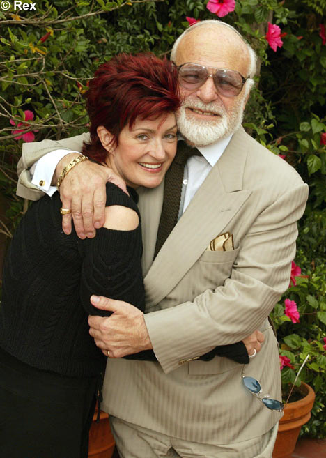

Born as Harry Levy in 1926, Arden went into showbiz at the age of 13. He did stand-up comedy and singing during the war years. Don Arden was Jewish and he began his career in management by organising Hebrew folk music competitions. By the 1960s, he had moved into full-blown management and was organising British tours for American performers such as Chuck Berry and Bo Diddley.
His first major group was The Small Faces. The group liked his enthusiasm and, in a short time, were signed up. They had a chart hit but it entered the charts illegally – supposedly by fixing it. But his foul play with The Small Faces wasn’t over yet. In 1966, Robert Stigwood, another music manager spoke to The Small Faces about changing managers. Arden went to “teach him a lesson” with some friends and threatened to throw Stigwood out a window.
He also tried to strangle one of the musicians and throw him out of a window.In the 1970s, Don Arden became manager of rock legends Black Sabbath and ELO. Arden’s problems really began to grow. In 1979, Arden had Sabbath’s singer Ozzy Osbourne thrown out of the band for drink and drug problems.  Arden’s daughter, Sharon, began to date and manage Ozzy. In an attempt to split them up, Arden told Ozzy that Sharon had tried to seduce him, her own father. After this failed, Arden set loose his dogs on Sharon, who was pregnant. She had a miscarriage and didn’t speak to her father for over 20 years until Ozzy reconciled the two.
In the 1980s, Arden had a record company, but it collapsed after legal costs destroyed it. His son, David, seems to have taken a leaf from his father’s book and went to prison for assaulting an employee. Don was also charged in relation with this. Don Arden’s violent temper and unethical business practices eventually destroyed his business.
His daughter’s business practices are somewhat different. Sharon is more open and is “Flying High Again” to quote one of her husband’s songs. She has been involved in court cases involving royalties but, in general her methods are fairly honest. She once said that her father taught her how to destroy a business and that was the best thing he ever did for her. If you want to succeed in business, you shouldn’t alienate too many people. Negative actions have a way of coming back to you. And in the case of Don Arden, losing his family and business are good examples of the saying, “What goes around, comes around”. ✪
Born: 4th January 1926 in Manchester, England
Died: 21st July 2007 in Los Angeles, USA
Known as: “Mr. Big”, “The English Godfather” and “The Al Capone of Pop”